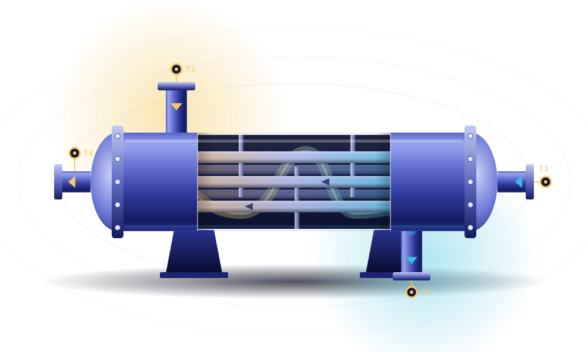
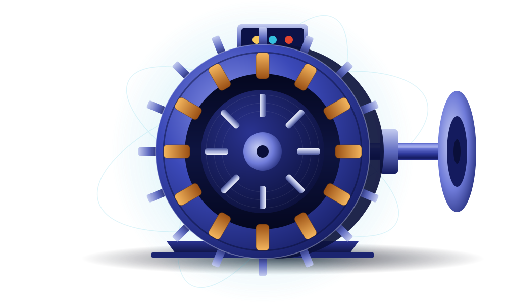
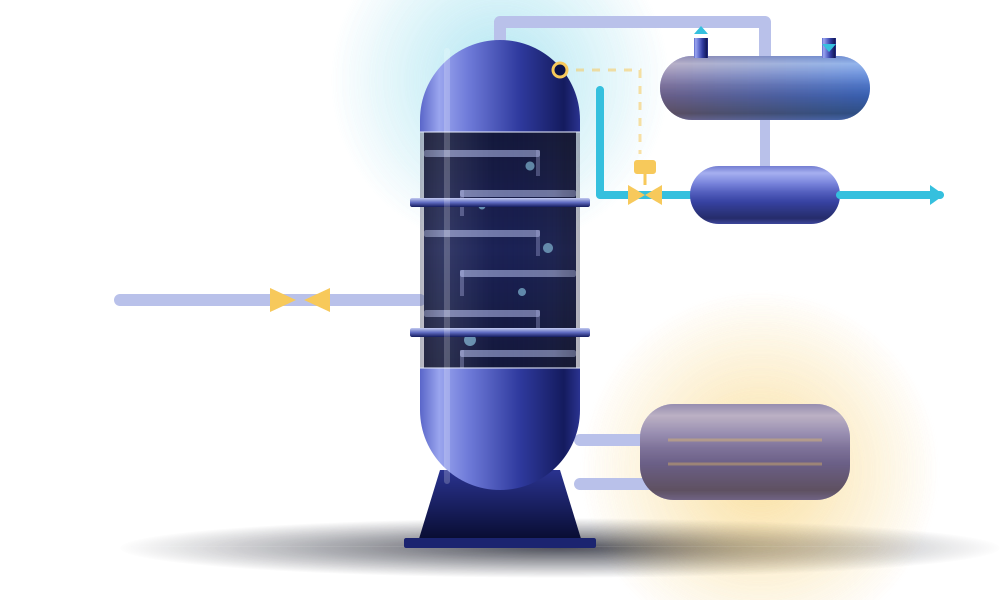
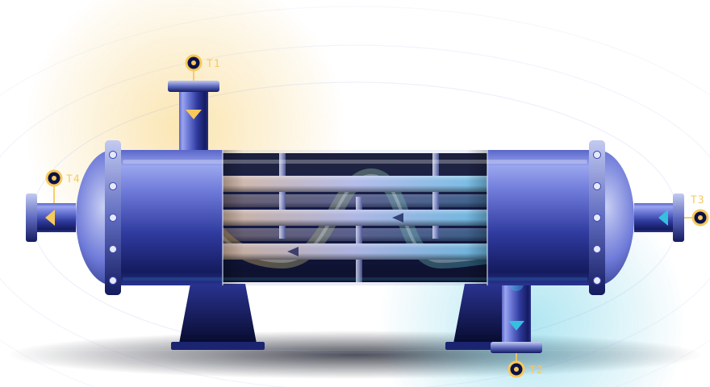
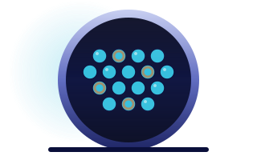
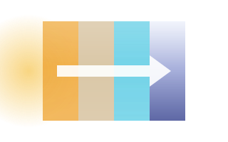

Mechanical & Manufacturing
Heat transfer, thermodynamics and manufacturing processes.
5 experiments2 courses
“Which engineering areas, courses and experiments are covered?” All areas → one area → one course → its experiments. One collection template: header with counts that link, then one list.
Each area groups the courses that have published experiments.

Heat transfer, thermodynamics and manufacturing processes.

Electrical machines, transformers and power electronics.

Heat transfer, thermodynamics and manufacturing processes.
Laboratory experiments covering conduction, convection and exchanger performance. Learners take their own instrument readings under realistic operating conditions.

Vary flow rates and inlet temperatures across a two-pass exchanger, then derive the effectiveness–NTU relationship from your own readings.
Available inWEBARVR
Introduce progressive fouling on the tube side and measure its effect on the overall heat transfer coefficient.
Available inWEBVR
Build a layered wall, measure the temperature profile and separate the contribution of each material.
Available inWEBARLoading, failure, missing artwork, missing course code, nothing published, not found, mobile.
Each area groups the courses that have published experiments.
Each area groups the courses that have published experiments.
Check your connection and try again. You can still browse every experiment.
Each area groups the courses that have published experiments.
Heat transfer, thermodynamics and manufacturing processes.
Electrical machines, transformers and power electronics.
Laboratory experiments covering conduction, convection and exchanger performance. Learners take their own instrument readings under realistic operating conditions.
Vary flow rates and inlet temperatures across a two-pass exchanger, then derive the effectiveness–NTU relationship from your own readings.
Available inWEBARVRIntroduce progressive fouling on the tube side and measure its effect on the overall heat transfer coefficient.
Available inWEBVRBuild a layered wall, measure the temperature profile and separate the contribution of each material.
Available inWEBARMachining and casting experiments that relate process settings to the parts they produce.
Experiments appear here once they are published.
Browse all experimentsThe link may be out of date. Every published experiment is in the catalogue.
Laboratory experiments covering conduction, convection and exchanger performance. Learners take their own instrument readings under realistic operating conditions.
Vary flow rates and inlet temperatures across a two-pass exchanger, then derive the effectiveness–NTU relationship from your own readings.
Available inWEBARVRIntroduce progressive fouling on the tube side and measure its effect on the overall heat transfer coefficient.
Available inWEBVRBuild a layered wall, measure the temperature profile and separate the contribution of each material.
Available inWEBAR